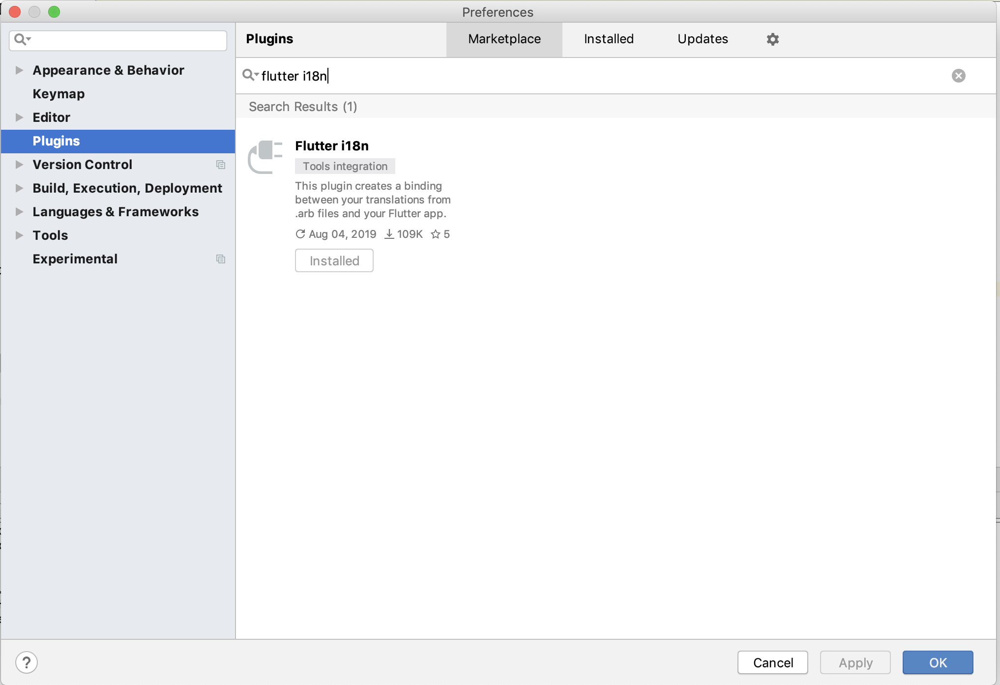
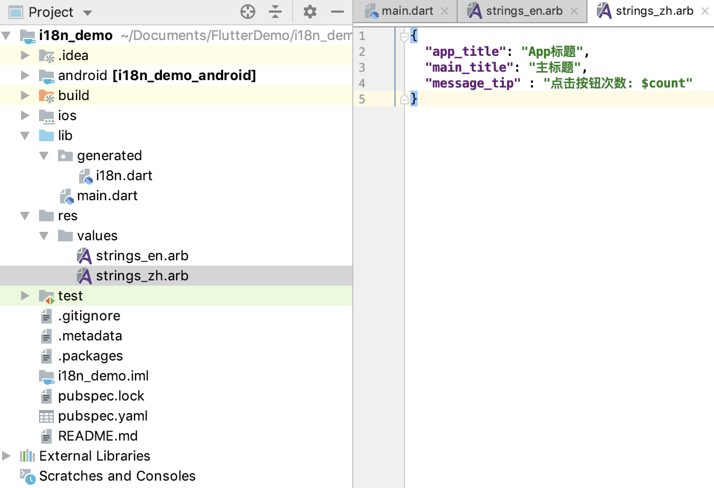
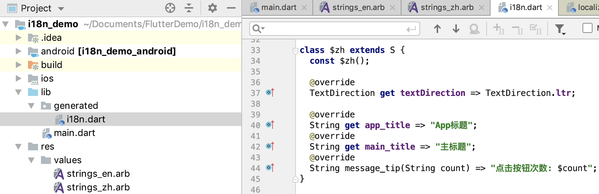
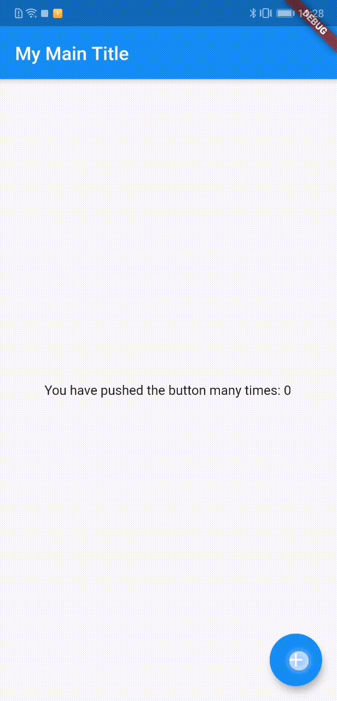
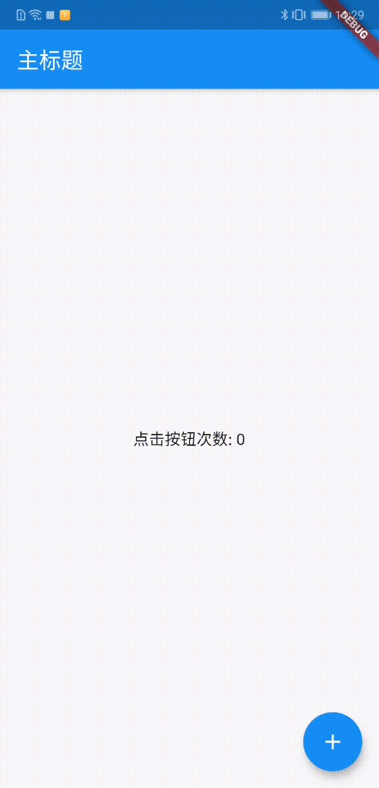
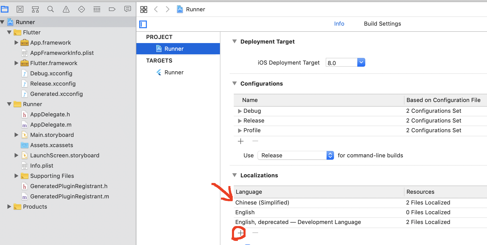
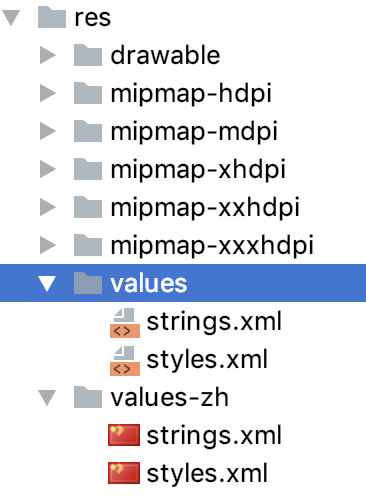
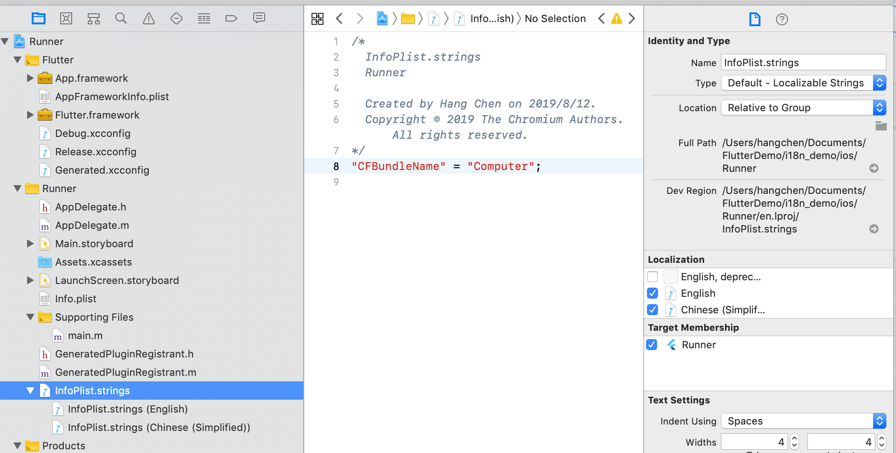

- 00 开篇词 为什么每一位大前端从业者都应该学习Flutter？.md
- 01 预习篇 · 从0开始搭建Flutter工程环境.md
- 02 预习篇 · Dart语言概览.md
- 03 深入理解跨平台方案的历史发展逻辑.md
- 04 Flutter区别于其他方案的关键技术是什么？.md
- 05 从标准模板入手，体会Flutter代码是如何运行在原生系统上的.md
- 06 基础语法与类型变量：Dart是如何表示信息的？.md
- 07 函数、类与运算符：Dart是如何处理信息的？.md
- 08 综合案例：掌握Dart核心特性.md
- 09 Widget，构建Flutter界面的基石.md
- 10 Widget中的State到底是什么？.md
- 11 提到生命周期，我们是在说什么？.md
- 12 经典控件（一）：文本、图片和按钮在Flutter中怎么用？.md
- 13 经典控件（二）：UITableView_ListView在Flutter中是什么？.md
- 14 经典布局：如何定义子控件在父容器中排版的位置？.md
- 15 组合与自绘，我该选用何种方式自定义Widget？.md
- 16 从夜间模式说起，如何定制不同风格的App主题？.md
- 17 依赖管理（一）：图片、配置和字体在Flutter中怎么用？.md
- 18 依赖管理（二）：第三方组件库在Flutter中要如何管理？.md
- 19 用户交互事件该如何响应？.md
- 20 关于跨组件传递数据，你只需要记住这三招.md
- 21 路由与导航，Flutter是这样实现页面切换的.md
- 22 如何构造炫酷的动画效果？.md
- 23 单线程模型怎么保证UI运行流畅？.md
- 24 HTTP网络编程与JSON解析.md
- 25 本地存储与数据库的使用和优化.md
- 26 如何在Dart层兼容Android_iOS平台特定实现？（一）.md
- 27 如何在Dart层兼容Android_iOS平台特定实现？（二）.md
- 28 如何在原生应用中混编Flutter工程？.md
- 29 混合开发，该用何种方案管理导航栈？.md
- 30 为什么需要做状态管理，怎么做？.md
- 31 如何实现原生推送能力？.md
- 32 适配国际化，除了多语言我们还需要注意什么_.md
- 33 如何适配不同分辨率的手机屏幕？.md
- 34 如何理解Flutter的编译模式？.md
- 35 Hot Reload是怎么做到的？.md
- 36 如何通过工具链优化开发调试效率？.md
- 37 如何检测并优化Flutter App的整体性能表现？.md
- 38 如何通过自动化测试提高交付质量？.md
- 39 线上出现问题，该如何做好异常捕获与信息采集？.md
- 40 衡量Flutter App线上质量，我们需要关注这三个指标.md
- 41 组件化和平台化，该如何组织合理稳定的Flutter工程结构？.md
- 42 如何构建高效的Flutter App打包发布环境？.md
- 43 如何构建自己的Flutter混合开发框架（一）？.md
- 44 如何构建自己的Flutter混合开发框架（二）？.md
- 特别放送 温故而知新，与你说说专栏的那些思考题.md
- 结束语 勿畏难，勿轻略.md
32 适配国际化，除了多语言我们还需要注意什么_
你好，我是陈航。今天，我们来聊聊Flutter应用的国际化。
借助于App Store与Google Play，我们能够把应用发布到全世界的任何一个应用商店里。应用的（潜在）使用者可能来自于不同国家、说着不同的语言。如果我们想为全世界的使用者提供统一而标准的体验，那么首先就需要让App能够支持多种语言。而这一过程，一般被称为“国际化”。
提起国际化，你可能会认为这等同于翻译App内所有用户可见的文本。其实，这个观点不够精确。更为准确地描述国际化的工作职责，应该是“涉及语言及地区差异的适配改造过程”。
比如，如果我们要显示金额，同样的面值，在中国会显示为￥100，而在美国则会显示为$100；又比如，App的引导图，在中国我们可能会选用长城作为背景，而在美国我们则可能会选择金门大桥作为背景。
因此，对一款App做国际化的具体过程，除了翻译文案之外，还需要将货币单位和背景图等资源也设计成可根据不同地区自适应的变量。这也就意味着，我们在设计App架构时，需要提前将语言与地区的差异部分独立出来。
其实，这也是在Flutter中进行国际化的整体思路，即语言差异配置抽取+国际化代码生成。而在语言差异配置抽取的过程中，文案、货币单位，以及背景图资源的处理，其实并没有本质区别。所以在今天的分享中，我会以多语言文案为主，为你讲述在Flutter中如何实现语言与地区差异的独立化，相信在学习完这部分的知识之后，对于其他类型的语言差异你也能够轻松搞定国际化了。
Flutter i18n
在Flutter中，国际化的语言和地区的差异性配置，是应用程序代码的一部分。如果要在Flutter中实现文本的国际化，我们需要执行以下几步：
- 首先，实现一个LocalizationsDelegate（即翻译代理），并将所有需要翻译的文案全部声明为它的属性；
- 然后，依次为需要支持的语言地区进行手动翻译适配；
- 最后，在应用程序MaterialApp初始化时，将这个代理类设置为应用程序的翻译回调。
如果我们中途想要新增或者删除某个语系或者文案，都需要修改程序代码。
看到这里你会发现，如果我们想要使用官方提供的国际化方案来设计App架构，不仅工作量大、繁琐，而且极易出错。所以，要开始Flutter应用的国际化道路，我们不如把官方的解决方案扔到一边，直接从Android Studio中的Flutter i18n插件开始学习。这个插件在其内部提供了不同语言地区的配置封装，能够帮助我们自动地从翻译稿生成Dart代码。
为了安装Flutter i18n插件，我们需要打开Android Studio的Preference选项，在左边的tab中，切换到Plugins选项，搜索这个插件，点击install即可。安装完成之后再重启Android Studio，这个插件就可以使用了。

图1 Flutter i18n插件安装
Flutter i18n依赖flutter_localizations插件包，所以我们还需要在pubspec.yaml文件里，声明对它的依赖，否则程序会报错：
dependencies:
flutter_localizations:
sdk: flutter
这时，我们会发现在res文件夹下，多了一个values/strings_en.arb的文件。
arb文件是JSON格式的配置，用来存放文案标识符和文案翻译的键值对。所以，我们只要修改了res/values下的arb文件，i18n插件就会自动帮我们生成对应的代码。
strings_en文件，则是系统默认的英文资源配置。为了支持中文，我们还需要在values目录下再增加一个strings_zh.arb文件：

图2 arb文件格式
试着修改一下strings_zh.arb文件，可以看到，Flutter i18n插件为我们自动生成了generated/i18n.dart。这个类中不仅以资源标识符属性的方式提供了静态文案的翻译映射，对于通过参数来实现动态文案的message_tip标识符，也自动生成了一个同名内联函数：

图3 Flutter i18n插件自动生成代码
我们把strings_en.arb继续补全，提供英文版的文案。需要注意的是，i18n.dart是由插件自动生成的，每次arb文件有新的变更都会自动更新，所以切忌手动编辑这个文件。
接下来，我们以Flutter官方的工程模板，即计数器demo来演示如何在Flutter中实现国际化。
在下面的代码中，我们在应用程序的入口，即MaterialApp初始化时，为其设置了支持国际化的两个重要参数，即localizationsDelegates与supportedLocales。前者为应用的翻译回调，而后者则为应用所支持的语言地区属性。
S.delegate是Flutter i18n插件自动生成的类，包含了所支持的语言地区属性，以及对应的文案翻译映射。理论上，通过这个类就可以完全实现应用的国际化，但为什么我们在配置应用程序的翻译回调时，除了它之外，还加入了GlobalMaterialLocalizations.delegate与GlobalWidgetsLocalizations.delegate这两个回调呢？
这是因为Flutter提供的Widget，其本身已经支持了国际化，所以我们没必要再翻译一遍，直接用官方的就可以了，而这两个类则就是官方所提供的翻译回调。事实上，我们刚才在pubspec.yaml文件中声明的flutter_localizations插件包，就是Flutter提供的翻译套装，而这两个类就是套装中的著名成员。
在完成了应用程序的国际化配置之后，我们就可以在程序中通过S.of(context)，直接获取arb文件中翻译的文案了。
不过需要注意的是，提取翻译文案的代码需要在能获取到翻译上下文的前提下才能生效，也就是说只能针对MaterialApp的子Widget生效。因此，在这种配置方式下，我们是无法对MaterialApp的title属性进行国际化配置的。不过，好在MaterialApp提供了一个回调方法onGenerateTitle，来提供翻译上下文，因此我们可以通过它，实现title文案的国际化：
//应用程序入口
class MyApp extends StatelessWidget {
@override
Widget build(BuildContext context) {
return MaterialApp(
localizationsDelegates: const [
S.delegate,//应用程序的翻译回调
GlobalMaterialLocalizations.delegate,//Material组件的翻译回调
GlobalWidgetsLocalizations.delegate,//普通Widget的翻译回调
],
supportedLocales: S.delegate.supportedLocales,//支持语系
//title的国际化回调
onGenerateTitle: (context){
return S.of(context).app_title;
},
home: MyHomePage(),
);
}
}
应用的主界面文案的国际化，则相对简单得多了，直接通过S.of(context)方法就可以拿到arb声明的翻译文案了：
Widget build(BuildContext context) {
return Scaffold(
//获取appBar title的翻译文案
appBar: AppBar(
title: Text(S.of(context).main_title),
),
body: Center(
//传入_counter参数，获取计数器动态文案
child: Text(
S.of(context).message_tip(_counter.toString())
)
),
floatingActionButton: FloatingActionButton(
onPressed: _incrementCounter,//点击回调
tooltip: 'Increment',
child: Icon(Icons.add),
),
);
}
在Android手机上，分别切换英文和中文系统，可以看到，计数器应用已经正确地处理了多语言的情况。

图4 计数器示例（Android英文系统）

图5 计数器示例（Android中文系统）
由于iOS应用程序有一套自建的语言环境管理机制，默认是英文。为了让iOS应用正确地支持国际化，我们还需要在原生的iOS工程中进行额外的配置。我们打开iOS原生工程，切换到工程面板。在Localization这一项配置中，我们看到iOS工程已经默认支持了英文，所以还需要点击“+”按钮，新增中文：

图6 iOS工程中文配置
完成iOS的工程配置后，我们回到Flutter工程，选择iOS手机运行程序。可以看到，计数器的iOS版本也可以正确地支持国际化了。
图7 计数器示例（iOS英文系统）
图8 计数器示例（iOS中文系统）
原生工程配置
上面介绍的国际化方案，其实都是在Flutter应用内实现的。而在Flutter框架运行之前，我们是无法访问这些国际化文案的。
Flutter需要原生环境才能运行，但有些文案，比如应用的名称，我们需要在Flutter框架运行之前就为它提供多个语言版本（比如英文版本为computer，中文版本为计数器），这时就需要在对应的原生工程中完成相应的国际化配置了。
我们先去Android工程下进行应用名称的配置。
首先，在Android工程中，应用名称是在AndroidManifest.xml文件中application的android:label属性声明的，所以我们需要将其修改为字符串资源中的一个引用，让其能够根据语言地区自动选择合适的文案：
<manifest ... >
...
<!-- 设置应用名称 -->
<application
...
android:label="@string/title"
...
>
</application>
</manifest>
然后，我们还需要在android/app/src/main/res文件夹中，为要支持的语言创建字符串strings.xml文件。这里由于默认文件是英文的，所以我们只需要为中文创建一个文件即可。字符串资源的文件目录结构，如下图所示：

图9 strings.xml文件目录结构
values与values-zh文件夹下的strings.xml内容如下所示：
<!--英文(默认)字符串资源-->
<?xml version="1.0" encoding="utf-8"?>
<resources>
<string name="title">Computer</string>
</resources>
<!--中文字符串资源-->
<?xml version="1.0" encoding="utf-8"?>
<resources>
<string name="title">计数器</string>
</resources>
完成Android应用标题的工程配置后，我们回到Flutter工程，选择Android手机运行程序，可以看到，计数器的Android应用标题也可以正确地支持国际化了。
接下来，我们再看iOS工程下如何实现应用名称的配置。
与Android工程类似，iOS工程中的应用名称是在Info.list文件的Bundle name属性声明的，所以我们也需要将其修改为字符串资源中的一个引用，使其能够根据语言地区自动选择文案：

图10 iOS工程应用名称配置
由于应用名称默认是不可配置的，所以工程并没有提供英文或者中文的可配置项，这些都需要通过新建与字符串引用对应的资源文件去搞定的。
我们右键单击Runner文件夹，然后选择New File来添加名为InfoPlist.strings的字符串资源文件，并在工程面板的最右侧文件检查器中的Localization选项中，添加英文和中文两种语言。InfoPlist.strings的英文版和中文版内容如下所示：
//英文版
"CFBundleName" = "Computer";
//中文版
"CFBundleName" = "计数器";
至此，我们也完成了iOS应用标题的工程配置。我们回到Flutter工程，选择iOS手机运行程序，发现计数器的iOS应用标题也支持国际化了。
总结
好了，今天的分享就到这里。我们来总结下核心知识点吧。
在今天的分享中，我与你介绍了Flutter应用国际化的解决方案，即在代码中实现一个LocalizationsDelegate，在这个类中将所有需要翻译的文案全部声明为它的属性，然后依次进行手动翻译适配，最后将这个代理类设置为应用程序的翻译回调。
而为了简化手动翻译到代码转换的过程，我们通常会使用多个arb文件存储文案在不同语言地区的映射关系，并使用Flutter i18n插件来实现代码的自动转换。
国际化的核心就是语言差异配置抽取。在原生Android和iOS系统中进行国际化适配，我们只需为需要国际化的资源（比如，字符串文本、图片、布局等）提供不同的文件夹目录，就可以在应用层代码访问国际化资源时，自动根据语言地区进行适配。
但，Flutter的国际化能力就相对原始很多，不同语言和地区的国际化资源既没有存放在单独的xml或者JSON上，也没有存放在不同的语言和地区文件夹中。幸好有Flutter i18n插件的帮助，否则为一个应用提供国际化的支持将会是件极其繁琐的事情。
我把今天分享所涉及到的知识点打包到了GitHub中，你可以下载下来，反复运行几次，加深理解与记忆。
思考题
最后，我给你留下一道思考题吧。
在Flutter中，如何实现图片类资源的国际化呢？
欢迎你在评论区给我留言分享你的观点，我会在下一篇文章中等待你！感谢你的收听，也欢迎你把这篇文章分享给更多的朋友一起阅读。
© 2019 - 2023 Liangliang Lee. Powered by gin and hexo-theme-book.